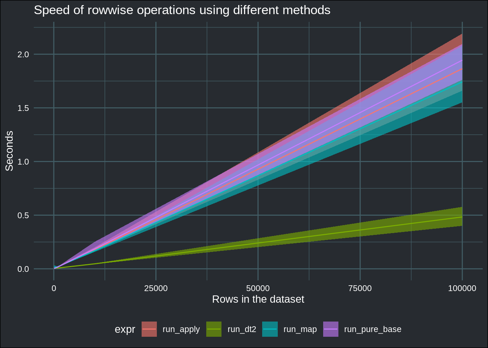

Speedrunning row-oriented workflows
If you haven’t, you should read this first. This is part two.
Speedrunning is the… hrm… - sport? art? - of playing games from start to finish as fast as possible. Speedrunning requires an insane amount of knowledge of the game being played, as well as an enourmous amount of skill. Also, contrary to what you might think, it is a community effort. Players do speedrun the game alone, and it is a ferocious competition, each one of them aiming for the top spot on the leaderboards. But discovering the strategies that will allow the top players to shave off, sometimes literally, hundredths of seconds from the previous world record require many, many, people from the speedrunning community trying to break the games in new ways, or testing how fast theoretical strategies using computers that play the game perfectly are (these type of speedruns are called TAS, for Tool Assisted Speedrun, and are a very important part of the speedrunning effort).
If you read until here, I commend you dear reader, and thank you for not having already closed the tab. The meat of the post is coming.
If you don’t know anything about speedrunning, I can only urge you to watch this video about the story of the Super Mario Bros. World Records. If you’re more into Doom, then watch this video abut the history of Doom 2 World Records. It really is worth your time, believe me.
Anyways, why am I talking about this? What is the point of this blog post? Isn’t this a blog about Econometrics and Free Software (lol)?
The reason I’m talking about speedrunning in video games, is because my previous blog post sparked an interesting discussion on twitter, which very much reminded me of what you’d see in the speedrunning community.
Just like in speedrunning, I tried to play a game which consisted in running an arbitrary function over the rows of a data frame, and employed some basic strategies for it. As a reminder, here is the example code with the top two strategies: using apply() and a combination of asplit() and map() (I won’t be showing all the code here, it’s the same as in the previous blog post):
run_apply <- function(dataset, my_function = my_function){
dataset %>%
mutate(score = apply(., MARGIN = 1, my_function))
}
run_map <- function(dataset, my_function = my_function){
dataset %>%
mutate(score = map_dbl(asplit(., 1), .f = my_function))
}
Also, just as a reminder, here is the rowwise() approach:
run_rowwise <- function(dataset, my_function = my_function){
dataset %>%
rowwise() %>%
mutate(score = my_function(c_across(everything()))) %>%
ungroup()
}This is, AFAIK, the official tidyverse-approach, but not the fastest. However, while it is slower than the two approaches above, it does have the advantage that you can run the function over the rows, but only by using certain columns instead of all of them. For example, to apply the function over only the columns that start with the letter “c” (and for each row), you could write this:
run_rowwise <- function(dataset, my_function = my_function){
dataset %>%
rowwise() %>%
mutate(score = my_function(c_across(starts_with("c")))) %>%
ungroup()
}
This is not possible with the two fast approaches, run_map() and run_apply(). These two approaches do run quite fast, but in the twitter discussion I linked above, many more suggestions were made, and some are likely faster, so let’s see! There’s first an approach using pmap() proposed by both @lgaborini and @JoeWasserman:
run_pmap <- function(dataset, my_function = my_function){
dataset %>%
mutate(score = pmap_dbl(., .f = lift_vd(my_function)))
}
I won’t go into the details here of how and why this works. For more details, click here. In any case, this does not run faster that the two approaches listed above. But it does run faster than using rowwise() and also allows for selecting columns over which to run the function:
run_pmap <- function(dataset, my_function = my_function){
dataset %>%
mutate(score = pmap_dbl(select(., matches(".(4|5|6)")), .f = lift_vd(mean)))
}
run_pmap(dataset) %>%
head## # A tibble: 6 × 7
## x1 x2 x3 x4 x5 x6 score
## <dbl> <dbl> <dbl> <dbl> <dbl> <dbl> <dbl>
## 1 0.0644 0.789 0.489 0.665 0.664 0.230 0.520
## 2 0.771 0.209 0.443 0.248 0.756 0.0164 0.340
## 3 0.342 0.0382 0.619 0.196 0.115 0.783 0.365
## 4 0.638 0.915 0.0472 0.891 0.346 0.639 0.625
## 5 0.0366 0.601 0.426 0.421 0.835 0.906 0.721
## 6 0.0465 0.937 0.260 0.803 0.376 0.330 0.503So this is quite useful!
There was another proposal, a pure base approach, by @grant_mcdermott:
run_pure_base <- function(dataset, my_function = my_function){
dataset |>
within({score = sapply(asplit(dataset, 1), my_function)})
}It even uses the new, shiny (haha), native pipe, |>! I have not benchmarked this yet, as I’m writing this, so let’s see…
Finally, there is also a {data.table} approach, proposed by @thatpinkney:
library(data.table)
run_dt2 <- function(dataset, my_function = my_function){
dataset <- as.data.table(dataset)
dataset[, rowid := .I]
dataset[, ":=" (score = melt(dataset, id.vars = "rowid")[, my_function(value), by = rowid][, V1],
rowid = NULL)]
}
The problem of this approach, at least to me, is that I do not know {data.table}, which is the reason why I did not include it in the previous blog post. But I have read many times that {data.table} is blazing fast, so I definitely should learn at least some basics!
Now is benchmarking time. Let’s see (I’m not considering run_pmap(), because I already benchmarked it before writing this blog post, and know that it runs slower than the run_map() or run_apply()):
list_datasets <- map(seq(2, 5), ~init_pop(objective_function = my_function,
pop_size = `^`(10, .x)))
run_benchmarks <- function(dataset, times = 5){
microbenchmark::microbenchmark(
run_apply(dataset, my_function = my_function),
run_pure_base(dataset, my_function = my_function),
run_dt2(dataset, my_function = my_function),
run_map(dataset, my_function = my_function),
times = times,
unit = "s"
)
}benchmark_results <- map(list_datasets, run_benchmarks)
benchmark_data <- map2(.x = benchmark_results, .y = 10^seq(2, 5), .f = ~mutate(tibble(.x), pop_size = .y)) %>%
bind_rows() %>%
mutate(expr = str_remove_all(expr, "\\(.*\\)")) %>%
group_by(expr, pop_size) %>%
mutate(time_seconds = time/10^9) %>%
summarise(fastest_run = min(time_seconds),
average_run = mean(time_seconds),
slowest_run = max(time_seconds))## `summarise()` has grouped output by 'expr'. You can override using the `.groups` argument.benchmark_data %>%
ggplot(aes(y = average_run, x = pop_size)) +
geom_ribbon(aes(ymin = fastest_run, ymax = slowest_run, fill = expr), alpha = .6) +
geom_line(aes(group = expr, col = expr)) +
ylab("Seconds") +
xlab("Rows in the dataset") +
ggtitle("Speed of rowwise operations using different methods") +
theme_blog()
These are really interesting results! The pure base solution runs almost as fast as the one that uses asplit() and map(). The one that uses apply() only is a close second, but all these strategies get obliterated by the {data.table} solution!
So, what have we learned?
- First of all, the #RStats community is really great! I’m really blown away by the interest that my previous blog post generated and by the very interesting discussion that ensued.
-
Second, if speed is really paramount to solving your problem, you’d probably want to use
{data.table}. It does seem to be incredibly fast! -
Third, and final point, if you need to run rowwise operations, but only over certain columns, use
pmap()instead ofrowwise()-across()-everything().